¿Qué producto estás viendo?
¿Qué quieren decir 🔥 y 🌿?
¿Qué quieren decir 🔥 y 🌿?
Explora toda la tienda
MEDICUBEResultados por preocupación
8 colecciones · 26
La marca con más productos de la tienda. Dermocosmética coreana: cada colección resuelve un problema concreto (poros, manchas, firmeza, hidratación). Elige lo que quieres mejorar y encuentra una colección para ti.
🌸
PDRN Pink Medicube
Piel de porcelana: firmeza, glow y poro cerrado
8
Ver qué tiene, para quién es y qué se nota▾
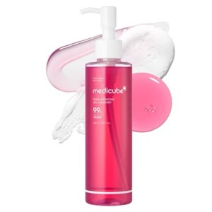

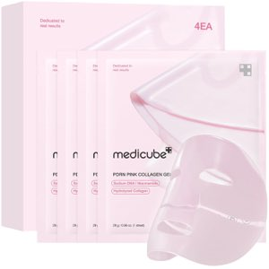


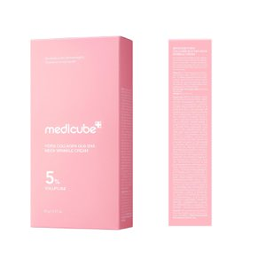
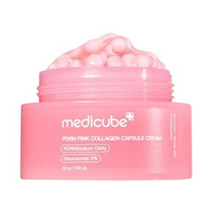

🫧
Zero Pore Medicube
Poro cerrado y cero brillo, todo el día
5
Ver qué tiene, para quién es y qué se nota▾


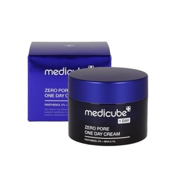

✨
Collagen Medicube
Piel que rebota: firmeza y efecto lifting
5
Ver qué tiene, para quién es y qué se nota▾
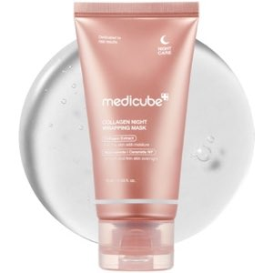
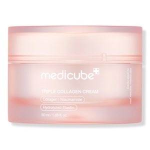

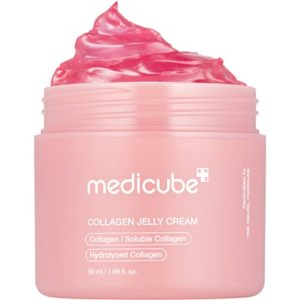

🍊
Deep Vita C Medicube
Luz inmediata para piel apagada
3
Ver qué tiene, para quién es y qué se nota▾
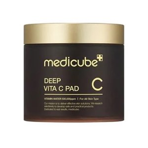
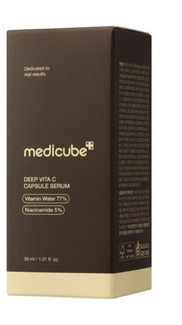
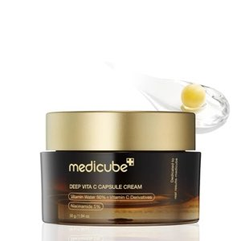
🎯
Kojic Acid Turmeric Medicube
Contra las manchas y la piel con brotes
2
Ver qué tiene, para quién es y qué se nota▾
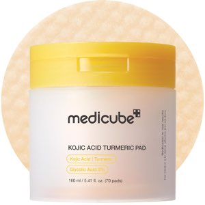

💧
Hyaluronic Medicube
Hidratación profunda que dura todo el día
1
Ver qué tiene, para quién es y qué se nota▾

🎯
TXA Niacinamide Medicube
Ayuda a atenuar las marcas que dejan los granitos
1
Ver qué tiene, para quién es y qué se nota▾

🧬
NAD Medicube
Anti-edad de última generación
1
Ver qué tiene, para quién es y qué se nota▾

SKIN1004Una planta, toda la rutina
6 colecciones · 12
Todo se hace con centella asiática de Madagascar: la planta que calma. Aquí están su ampolla de centella, la más famosa de la marca, y los bloqueadores ligeros que se volvieron virales: se sienten como sérum y no dejan capa blanca.
💧
Hyalu-Cica SKIN1004
El bloqueador que se siente como sérum
4
Ver qué tiene, para quién es y qué se nota▾
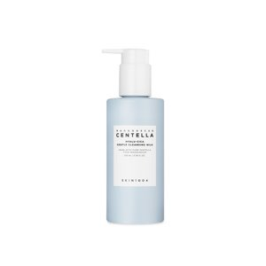

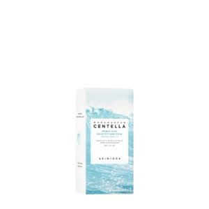
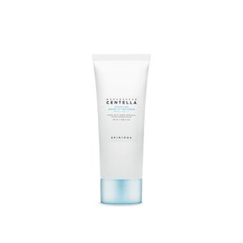
🌿
Tea-Trica SKIN1004
Árbol de té que calma el brote
2
Ver qué tiene, para quién es y qué se nota▾
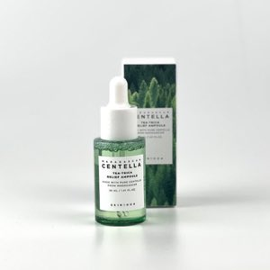

🌟
Tone Brightening SKIN1004
Tono parejo: la ampolleta en cápsulas y el bloqueador con color
2
Ver qué tiene, para quién es y qué se nota▾
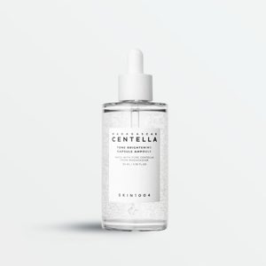

🍃
Centella Original SKIN1004
La rutina que calma todo, para la piel más delicada
2
Ver qué tiene, para quién es y qué se nota▾
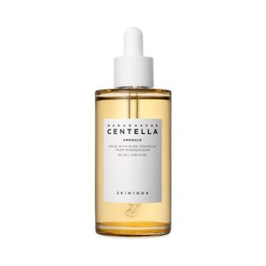
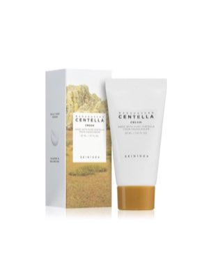
🛡️
Probio-Cica SKIN1004
El bloqueador con glow
1
Ver qué tiene, para quién es y qué se nota▾

🫧
Poremizing SKIN1004
El bloqueador de acabado mate para piel grasa
1
Ver qué tiene, para quién es y qué se nota▾
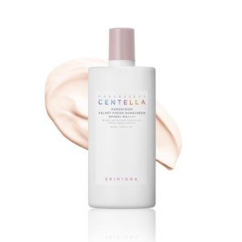
COSRXEl clásico que todas buscan
5 colecciones · 6
La marca coreana más famosa del mundo. Quizá ya la conoces por TikTok: la esencia Snail 96 de baba de caracol es su clásico más viral.
🐌
Advanced Snail COSRX
La baba de caracol que hizo famosa a la K-beauty
2
Ver qué tiene, para quién es y qué se nota▾


🧼
Low pH / Limpieza COSRX
El limpiador suave más famoso de Corea
1
Ver qué tiene, para quién es y qué se nota▾
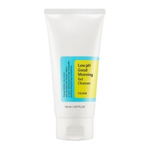
👁️
Peptide Collagen COSRX
Mirada fresca con parches de hidrogel
1
Ver qué tiene, para quién es y qué se nota▾

💉
Sérums Activos COSRX
Péptidos bien hechos y sin misterio
1
Ver qué tiene, para quién es y qué se nota▾

☀️
Protección Solar COSRX
Bloqueador cómodo para todos los días
1
Ver qué tiene, para quién es y qué se nota▾
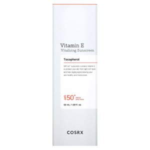
ANUACalma para piel sensible
5 colecciones · 9
Surtido enfocado: calmar e hidratar. Su aceite Heartleaf es el desmaquillante viral, y su línea PDRN hidrata con glow. Es una de las favoritas para rutinas calmantes e hidratantes.
💦
PDRN ANUA
Hidratación profunda con glow inmediato
3
Ver qué tiene, para quién es y qué se nota▾


🌱
Heartleaf ANUA
La doble limpieza viral que deja el poro impecable
3
Ver qué tiene, para quién es y qué se nota▾
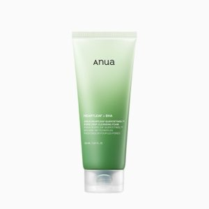
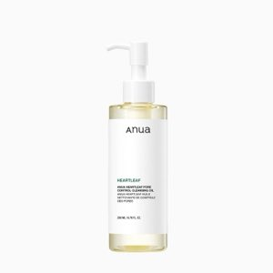

🎯
Niacinamide + TXA ANUA
El sérum anti-manchas más vendido de la marca
1
Ver qué tiene, para quién es y qué se nota▾
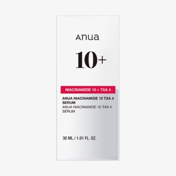
🌿
Azelaic Acid ANUA
Baja la rojez y el granito, también en piel grasa
1
Ver qué tiene, para quién es y qué se nota▾
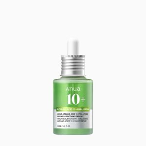
⏳
Collagen Retinol ANUA
Retinol amable con colágeno: líneas más finas sin irritar
1
Ver qué tiene, para quién es y qué se nota▾

CENTELLIAN24Anti-edad de farmacéutica
2 colecciones · 3
Nace de Madecassol, un medicamento cicatrizante coreano. Es una opción especializada si buscas cuidado anti-edad: la Madeca Cream y la línea de ojos 360 Shot.
🏥
Madeca Cream CENTELLIAN24
Anti-edad con respaldo farmacéutico
2
Ver qué tiene, para quién es y qué se nota▾

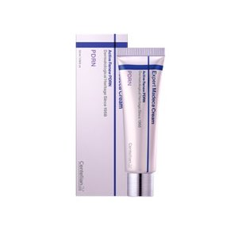
👁️
360 Shot PDRN CENTELLIAN24
Contorno de ojos con efecto lifting visible
1
Ver qué tiene, para quién es y qué se nota▾
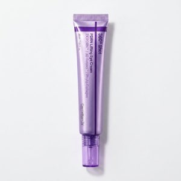
DR. ALTHEALa crema calmante favorita
3 colecciones · 5
Pocas referencias, cada una con función clara. La 345 Relief Cream es de las cremas más vendidas de Amazon: calma piel irritada, roja o maltratada — de las que se acaban y se vuelven a comprar.
🧯
345 Relief DR.ALTHEA
El rescate para piel irritada y enrojecida
3
Ver qué tiene, para quién es y qué se nota▾

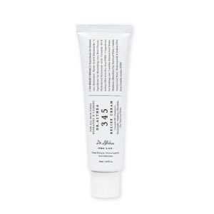

🍊
Esenciales DR.ALTHEA
Vitamina C que sí tolera la piel sensible
1
Ver qué tiene, para quién es y qué se nota▾

🧱
147 Barrier DR.ALTHEA
Repara la barrera de la piel seca o maltratada
1
Ver qué tiene, para quién es y qué se nota▾
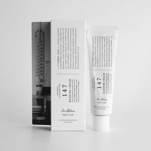
BIODANCELa mascarilla fenómeno
2 colecciones · 4
Su mascarilla de colágeno se vuelve transparente mientras duermes — ese efecto la hizo viral mundial. Es ideal para probar la marca o darte un tratamiento especial en casa.
🧖
Real Deep Masks BIODANCE
La mascarilla que se vuelve transparente mientras duermes
2
Ver qué tiene, para quién es y qué se nota▾


👁️
Collagen Peptide BIODANCE
Ojos frescos en 20 a 30 minutos
2
Ver qué tiene, para quién es y qué se nota▾

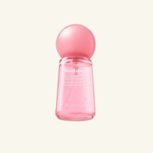
CELIMAXEl retinal que sí funciona
2 colecciones · 2
Dos productos muy concretos: el retinal anti-arrugas más vendido de su categoría (un paso arriba del retinol) y una crema que trabaja manchas y poros a la vez. Para quien busca resultados intensivos.
🎯
Dark Spot CELIMAX
Manchas y poros con una sola crema
1
Ver qué tiene, para quién es y qué se nota▾
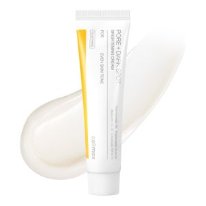
⏳
Retinal CELIMAX
Retinal para arrugas y firmeza, un paso arriba del retinol
1
Ver qué tiene, para quién es y qué se nota▾
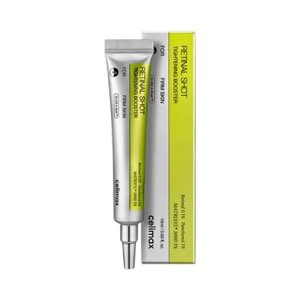
Las dudas de siempre
Respuestas cortas y honestas, antes de que preguntes.
▸«¿Y cómo lo pago?»
De contado o en quincenas con tu vale — cada producto y cada rutina te muestran su pago por quincena. ¿Hoy no alcanza para todo? Empieza con un producto y tu asesora te aparta el resto.
▸«¿No me va a irritar?»
Si tu piel es sensible, dilo al armar tu rutina: el sistema solo te ofrece fórmulas suaves. Y estrena con la prueba de parche: un poquito detrás de la oreja, 24 horas, antes de usarlo en la cara.
▸«¿En cuánto veo resultados?»
Lo típico es notarlo entre la semana 4 y 8, siendo constante y con bloqueador de día. Abajo está el tiempo por ingrediente — rangos honestos, no milagros.
▸«Estoy embarazada / dando pecho»
Díselo a tu asesora o marca 🤰 en el análisis de piel: el sistema te ofrece solo fórmulas suaves, sin activos fuertes. Y antes de estrenar tu rutina, enséñasela a tu médico.
▸«¿Es original?»
Todo lo de la tienda es 100% original de Corea. ¿Quieres comprobarlo? Escanea el código de barras aquí mismo: sale su ficha con precio oficial. Los 67 productos están registrados.
Tip: tómate una foto el día 1 — el cambio se ve comparando, no adivinando.
Skincare coreano 100% original, solo en tiendas BHermanos participantes.
Las fotos que tomas se leen aquí mismo en tu celular: no se suben a ningún lado.
Este contenido es informativo y no sustituye la opinión de un dermatólogo.